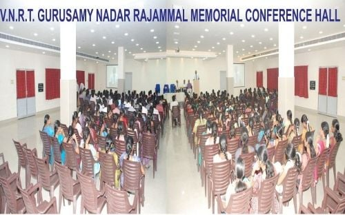
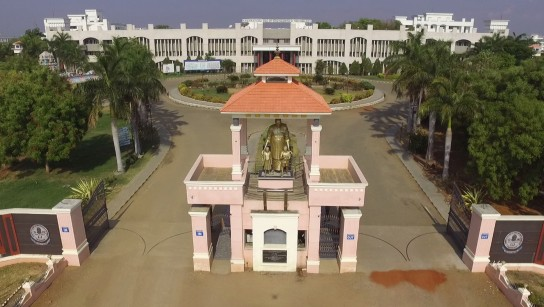
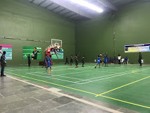
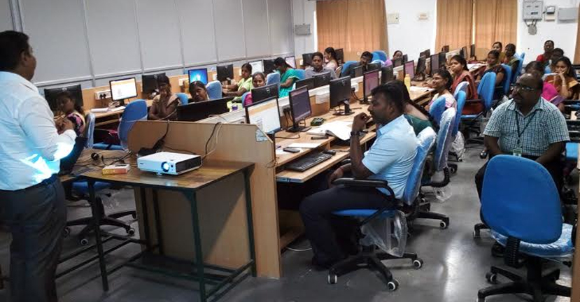
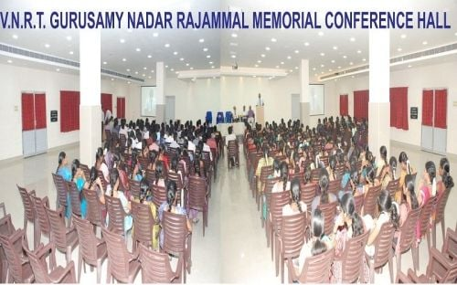
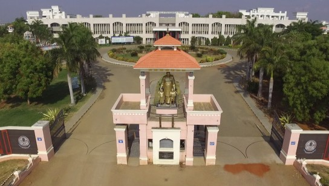
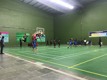
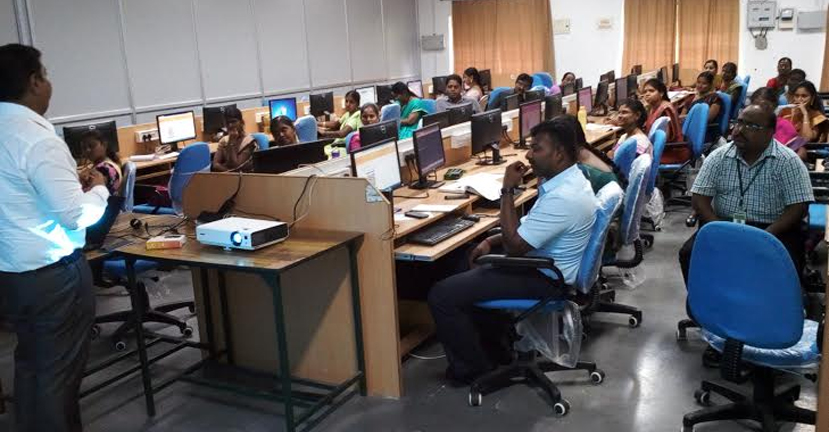

Academic of Kamaraj College Of Engineering and Technology
Kamaraj College of Engineering and Technology (KCET) is a college in Madurai District established in the year 1998. KCET has been granted Autonomous status by the University Grants Commission for 10 years from 2019 to 2029. It is a technical institution offering undergraduate, postgraduate and doctoral programs in engineering and technology. It is promoted and supported by Virudhunagar Hindu Nadars' Devasthanam, Mahamai Tharappus in Virudhunagar, educational institutions of Virudhunagar and other organizations.
 







Awards
Awards BHUMI Campus Award - 2022 for the most Eco-friendly & Socially responsible College. Best Engineering College in South India for Industry Interface - 2022 by CEGR, New Delhi Best institution providing good infrastructure for learning by the Cybermedia Research Group (Data Quest).